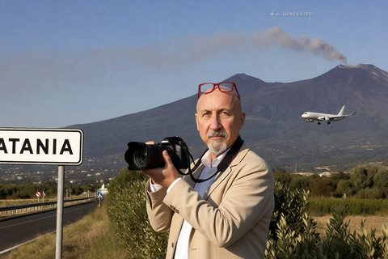
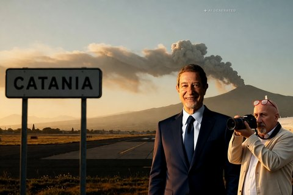
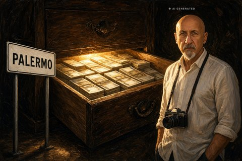

Sicilia · 30 ottobre 2026

I cento giorni dati al Consorzio per le autostrade siciliane sono scaduti il 26 ottobre senza le risposte attese. Intanto la Cgil chiede di sospendere il pedaggio dove si viaggia a 60 all'ora.
di Franco Zanghì
Sicilia · 30 ottobre 2026

Il deputato regionale aveva denunciato presunte infiltrazioni mafiose nelle imprese di pulizie degli ospedali palermitani. Sulle sue segnalazioni lavorano la commissione regionale Antimafia e la Guardia di finanza.
di Franco Zanghì
Cronaca · 30 ottobre 2026

Dai crateri sommitali è uscita una nube di cenere alta 4 chilometri e l'avviso per l'aviazione resta al livello più alto. Lo spazio aereo è stato riorganizzato, ma gli arrivi a Fontanarossa sono saliti a 12 l'ora.
di Franco Zanghì
Cronaca · 29 ottobre 2026

Una finta impiegata comunale chiedeva ai parroci di restituire un contributo versato per sbaglio, su una carta ricaricabile. Dei dieci indagati dalla procura di Torino, otto vengono dal Siracusano.
di Franco Zanghì
Sicilia · 28 ottobre 2026

Il ministro per la Protezione civile vorrebbe Fontanarossa lontano dalla cenere dell'Etna. Ma la pista la stanno allungando dov'è, con un progetto da oltre trecento milioni approvato dalla giunta regionale che guidava lui.
di Franco Zanghì
Cronaca · 28 ottobre 2026
Nell'aula bunker di Milano l'uomo che per i pm teneva insieme Cosa nostra, 'ndrangheta e camorra ha cambiato avvocato e ha deciso di collaborare. È il sesto pentito del processo.
di Franco Zanghì
Cronaca · 27 ottobre 2026

Un milione e duecentomila euro in contanti trovati in casa, pensioni di invalidità costruite su certificati firmati senza visita e presidi ortopedici pagati anche in pesce e vino. Il processo a un imprenditore comincia a dicembre.
di Franco Zanghì
Cronaca · 26 ottobre 2026

Una via di fuga sui tetti ricostruita con il drone, impronte su un palo della luce, tracce biologiche sotto le unghie. Gli elementi si accumulano, l'unico indagato resta uno solo, e perfino la sua difesa sostiene che a uccidere sia stato un altro.
di Franco Zanghì
Attualità · 26 ottobre 2026

Gli attacchi jihadisti completati in Europa passano da 6 a 9 e gli arresti da 289 a 347. In Italia, però, gli attentati del 2025 sono tutti di altra matrice. I conti veri, e perché la Sicilia araba non è il racconto che ci hanno insegnato.
di Franco Zanghì
Sicilia · 24 ottobre 2026

Depositate le ragioni per cui i due ricorsi contro le elezioni di Messina sono stati respinti. Sulle firme i giudici scrivono che la norma regionale parla di liste al plurale e non fissa alcun limite. Sulle dimissioni di Basile vale la legge siciliana, non quella dello Stato.
di Franco Zanghì
Cronaca · 24 ottobre 2026

Sotto il mare davanti ad Alicudi ci sono vulcani attivi, e la sequenza sismica in corso non li riguarda. Una faglia e un vulcano fanno tremare la terra in due modi diversi, e sugli strumenti lasciano due firme che i sismologi riconoscono a colpo d'occhio.
di Franco Zanghì
Cronaca · 23 ottobre 2026
Il terremoto delle 12.19, a 9 chilometri di profondità a nord-ovest di Alicudi, è stato avvertito da Palermo a Catania: scuole svuotate, gente in strada, nessun danno a persone. È l'episodio più forte di una sequenza cominciata martedì sera.
di Franco Zanghì
Sicilia · 21 ottobre 2026

Il Comitato trasportatori siciliani ha revocato il fermo dopo il tavolo con Salvini, l'Aias lo prosegue e tiene il blocco al casello di San Gregorio. Fra le due sigle volano accuse che nessun atto ha accertato.
di Franco Zanghì
Sicilia · 21 ottobre 2026

Due ricorsi chiedevano di annullare tutto: il voto, il sindaco, il consiglio comunale. Il Tar di Catania li ha respinti, ma le motivazioni non ci sono ancora, e la spiegazione che oggi tutti ripetono è scritta per un altro comune.
di Franco Zanghì
Sicilia · 10 ottobre 2026

Due trombe marine hanno colpito Marsala e Petrosino il 9 ottobre. Nessun morto, una scuola elementare distrutta con 273 bambini dentro. Sull'attribuzione al riscaldamento globale le fonti scientifiche dicono qualcosa di più preciso di quanto si è letto in quelle ore.
di Franco Zanghì